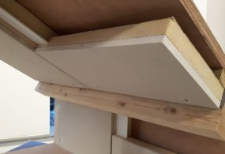

Dakisolatie Faay PG Roofing
Schuine dakwanden zijn vaak een leuke sfeermaker in een pand. Helaas zorgen ze vaak voor koudeoverlast in de winter en warmteoverlast in de zomer. Daar heeft Faay een effectieve oplossing voor: de PG Roofing, een thermisch isolerend voorzetelement voor hellende daken. Dankzij het kant-en-klaar-principe is uw schuine dakwand in een oogwenk van binnenuit geïsoleerd. Zonder ingewikkelde bouwkundige ingrepen!
Belangrijke kenmerken
| Materiaal | Sandwich element van gipsplaat met PIR isolatie |
| Toepassing | na-isolatie dakisolatie |
| Doe-het-zelf | ja |
| Afwerking | zelf afwerken: verf, pleister, behang, glasvlies, stucwerk |
| Afmetingen plaat | breedte 60 cm, lengte op aanvraag |
| Isolatiedikte | standaard PG70 = 70 mm |
| Isolatiewaarde | Rc= 3,06 m²K/W uitvoering PG70 |
| Prijsindicatie | € 55,- p/m2 incl. btw |
| certificaat | ISSO certificaat W’all-in-One systeem |
Voordelen
Duurzame grondstoffen en materialen, duurzame productie.
Droogbouw: minimale bouwoverlast, direct af te werken.
Kleine vellingkantjes, dus smalle paneelnaden.
Totaalsysteem met geïntegreerde folie, dus geen fouten of faalkosten.
Blijvend hoog thermisch rendement (dampremmende constructie)
Uitvoeringen
PG70 RoofingVoorzetelement van 70 mm dikte voor thermische isolatie (3,06 m² KW) van hellende daken.
PG90 Roofing
Voorzetelement van 90 mm dikte voor thermische isolatie (3.70 m² KW*) van hellende daken.
Meer info PG70 Roofing
De PG70 Roofing is een thermisch isolerend voorzetelement voor hellende daken. PG70 Roofing heeft een minimale dikte (70 mm), maar biedt wel maximale isolatie (3.06 m² KW). U plaatst de kant-en-klare PG70 Roofing eenvoudig en snel aan de binnenzijde van uw schuine dak. Even afwerken – en klaar!De PG70 Roofing is ideaal voor alle woon- en werkruimten met slecht geïsoleerde, hellende dakwanden. Dit voorzetelement is een onderdeel van W’all-in-One®.
Vergelijken
Dak
Platdakisolatie IKO EnerthermGeluid
Binnenwandsysteem HV70 Van FaayEco-Baffles Van VRK
Geluidisolatie Isolgomma Van Imbema
Gevel
BuitenisolatiegevelHoutvezelisolatie Van Gutex
Isolatie Isovlas PL Plaat
Spouwisolatie HR++ Neopixels EPS Parels
Glas
Glasfolie van HomechillHR++ Isolatieglas
Renovatieglas en Kozijnen
Vloer
Bodem afsluiting KalkkorrelsReflectiefolie Tonzon